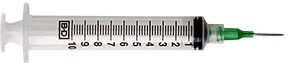

"ВЕТРИТУАЛ" МОСКВА
сколько стоит усыпление животных
| КОШКА | от 500 | |
| СОБАКА (до 10 кг) | от 1000 | |
| СОБАКА (от 10 до 50 кг) | от 1400 | |
| ХОРЕК | от 300 | |
| КРОЛИК | от 500 | |
| ШИНШИЛЛА | от 400 | |
| МОРСКАЯ СВИНКА | 5от 300 | |
| КРЫСА | от 300 | |
| ПОПУГАЙ | от 500 | |
ОБЩАЯ КРЕМАЦИЯ ЖИВОТНЫХ |
||
| КОШКА | от 500 | |
| СОБАКА (до 10 кг) | от 1000 | |
| СОБАКА (от 10 до 50 кг) | от 1300 | |
| КРОЛИК | 500 | |
| ОБЩИЙ НАРКОЗ ЗОЛИТИЛ+КСИЛА+ПРОПОФОЛ | от 500 | |
ИНДИВИДУАЛЬНАЯ КРЕМАЦИЯ ЖИВОТНЫХ |
||
| КОШКА | от 3000 | |
| СОБАКА (до 10 кг) | от 4000 | |
|
ЗАХОРОНЕНИЕ |
||
| КЛАДБИЩЕ ДЛЯ ЖИВОТНЫХ | от 2000 |
Точная стоимость усыпления и кремации животного зависит от массы и вида кремации. Уточняйтей у врачей по телефону.
Бывают случаи, когда животное гуманнее усыпить, чем проводить лечение и мучить его. Усыпление домашних животных – это возможность избавить их от страданий, которые в любом случае скоро закончатся смертью. Разумеется, мы всегда боремся до последнего, если есть хоть маленькая надежда, что животному может стать лучше.
Гуманное усыпление животных (процесс происходит безболезненно, питомец спокойно засыпает под воздействием препаратов) мы можем произвести либо непосредственно в ветклинике, либо на дому – здесь все зависит от того, какой вариант будет для Вас более предпочтительным. Кроме того, на сегодня актуальна комплексная услуга – усыпление и кремация животных (это делает их захоронение намного более простым и безопасным).
Если Вы выбираете усыпление животных на дому, лучше всего связаться с нами заранее и уточнить сроки его проведения. Стоимость такой услуги, как усыпление животных на дому - цена должна уточняться индивидуально для каждого случая.

ВО ВРЕМЯ УСЫПЛЕНИЯ ВСЕГДА ДЕЛАЕТСЯ 2 УКОЛА